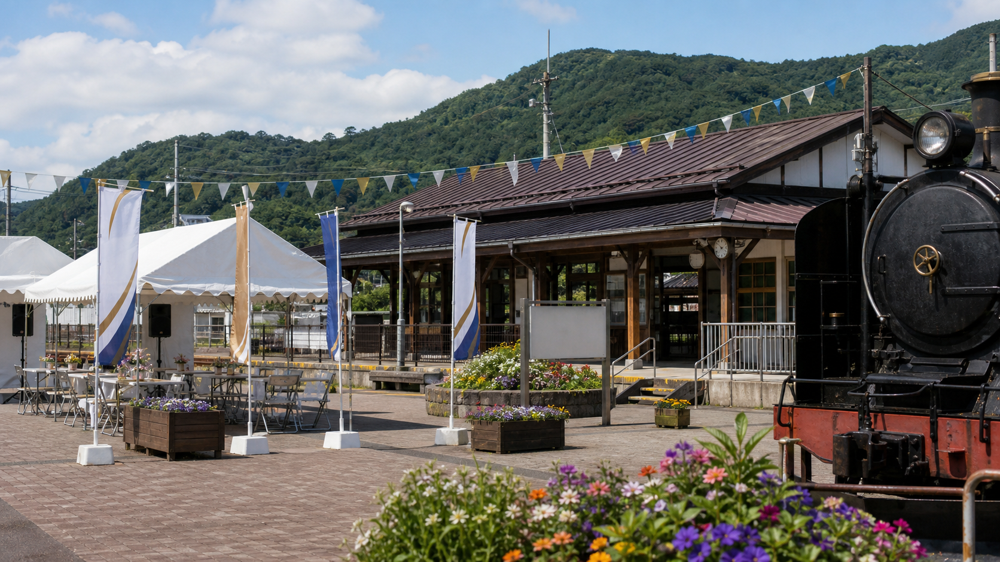

2026-05-05 23:18
雨のスタンプラリーの日、変な既視感

月見台駅前の記念イベント。雨上がりで石畳がずっと濡れていました。
90周年のスタンプラリー、思ったより人が多くて楽しかったです。月見台の北側階段にも人が流れていて、あの場所を久しぶりに見ました。
昔のノートを出したら、2008年5月3日の欄に「雨、北階段の灯りが消えている」「K-15のあと、御堂さんが濡れた手袋を紙袋に入れていた」と書いてありました。当時はただの駅員さんだと思っていました。
その夜、制服の男性と高校生くらいの女の子が階段上で話していたのも覚えています。女の子の名前は、後から七瀬理央さんだと知りました。
公式資料では「乗客なし」。でも、私の記憶ではあの日の駅には誰かがいました。
見に行ったページ
星ヶ浦タイムスの記事星ヶ浦町の安全情報鉄道資料室資料照合ノート最近の記事
星ヶ浦駅前の朝市
観光客より地元の人が多い朝市。汐見浜の干物が今年も人気でした。
月見台駅の坂道を歩く
高台までの坂はきついけれど、海が見える時間帯はやっぱりきれいです。北側階段は雨の日に閉まるようになっていました。
黒松口の松林
午後の松林は静かで、線路の音だけが遠くから聞こえます。
古い切符を整理しました
記念切符の束を整理していたら、展示ケースBに似た台紙を見つけました。乗務員名が端に残るタイプです。
カフェの新しいブレンド
春限定の浅煎りを始めました。星ヶ浦の海風に合う、少し明るい味です。
今年の沿線写真
雪の日の月見台、夏の汐見浜、秋の黒松口。写真を並べると小さな鉄道の一年が見えます。
資料室で見た古い運転日誌
D-07の遅延記録だけ、妙に赤字のメモが多かったのが気になりました。
十年目の雨
あの夜と同じ雨でした。20:08ごろに通過した回送の音を、今でも思い出すことがあります。
臨時休業のお知らせ
体調不良のため本日はお休みします。昨夜、駅で見たことをうまく言葉にできません。